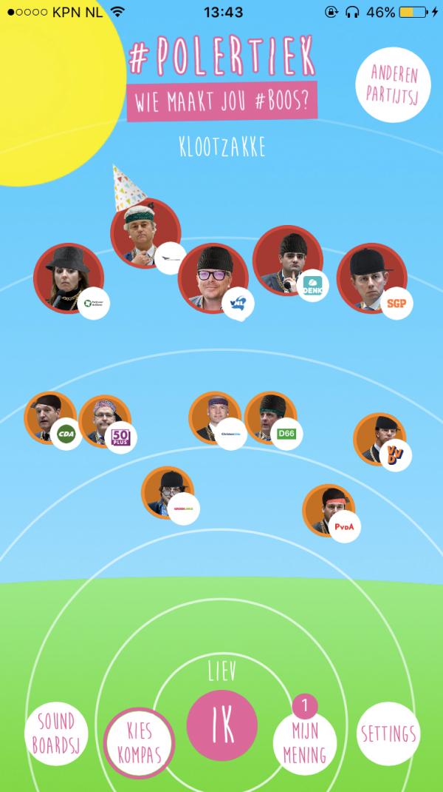

Pressure cooking an app to encourage young people to vote
2017 marked an election year in the Netherlands. BNNVARA’s presenter Tim Hofman was on a quest to get young people more engaged in politics. Out of all voters in the Netherlands, those between 18 and 34 have the lowest turnout numbers at elections. Tim had a goal to get these numbers up and get these people to vote.
With his YouTube show #BOOS and it’s quirky and particular style, he had quickly gained an enormous following among this target audience. He felt it was time to use this platform to aid his mission. Enter #Polertiek; a #BOOS spin off focused on helping young people solve political issues. Getting up close with these politicians with real world issues.
BNNVARA being a socially committed broadcasting company, one-time additional budget to develop a #Polertiek app was quickly greenlit.
The concept
Simply put, the Polertiek app was a custom version of Kieskompas (Electoral Compass); an app that let users answer statements about political issues on a five point scale. In turn the app would place the user within a Political Landscape, showing where political parties stand in relation to the user’s answers. All this was done in the characteristic style of #BOOS.
Some of the app's features:
- Soundboard, with soundbytes from the YouTube channel
- Kieskompas with political statements based on the agenda’s of all participating political parties, rewritten in the #BOOS tone of voice. These statements were preceded by videos made in #BOOS fashion, giving a bit of background on them.
We introduced a few Easter eggs as well.
- #BOOS uses a lot of confetti cannons in the show, so I thought it would be fun that shaking your phone would set set off a confetti cannon and cover your screen in digital confetti.
- Vegetables are a (very random) recurring theme in the show, so in the app settings we added a broccoli toggle.
The challenges
- How might we encourage the #BOOS audience (and preferably beyond) to go out and vote?
- How can we help them find out which political party they should vote for, based on their preferences?
- How can we find out about people’s charactaristics as much as possible in order to get the best statistical data, without invading their pricacy too much?
- How can we do all this in record time? The elections were in 8 weeks and we wanted to launch at least two weeks before...
The team
This project was a joint effort between BNNVARA (concepting, project management and UX/UI), Elastique (app development) and Kieskompas (voting advice logistics and API). I worked alongside our product owner, my junior UX/UI design colleague as well as the editors of #BOOS.
Over the course of this project I was responsible for further developing the concept, conducting design research, facilitating workshops, journey mapping and mentoring my junior colleague. He would be responsible for the interaction and ui design of the app.
Technical enablers
In order for us to move quickly we reached out to André Krouwel of Kieskompas to see whether we could use his team’s expertise to help us set up an electoral compass of our own. Lucky for us he was more than interested in the idea and offered to help in logistics as well.
This meant we could utilize the Kieskompas API to make use of all of their business logic and algorithms to make our own compass. This limited our design freedom somewhat, but also narrowed the concept down and therefore decreased the overall scope of the project dramatically. The developers at Kieskompas would be available for Elastique’s development team to help out with the implementation.
Time to empathise
With the architecture sorted, I started doing some desk research. I wanted to find out why young people weren’t voting. Many of the resources I found conveyed the same, or a similar message. Some of the insights I gathered:
- “My single vote doesn’t make a difference”
- “I don’t know (or care) enough about politics to make an educated decision”
- “I have no trust in politics or politicians”
- “All parties are the same, so what difference does it make?”
I decided to take to the streets and ask some young people wether it was their intention to go and vote. Surprisingly, most of the people I talked said they were. The few that didn’t, a mixed group in terms of ethnicity and educational level, had similar standpoints to the desk research.
Ideation & looking to the future
This high level knowledge of our audience and their problems gave us enough ammo to start ideating. We planned a brainstorm with stakeholders and team members to come up with ideas of what we could add to the concept of Kieskompas, and how we can make the Kieskompas itself more #BOOS.
Some of the ideas we came up with were way out there and discarded quite early. Others made it into the first version of the flow, drawn up by me and our Junior UI designer.
Even though we were under tremendous time pressure, we took this excercise to also look at the future of the app. When the elections were over, we didn’t want the app to reach end of life.
We saw great potential in using the app in conjunction with #BOOS. Making it into a companion app in which we could build a powerful community. We created a small roadmap, taking some of the ideas and concepts we had discarded before.
After drawing out the initial flow we were left with a question of what our main concept would look like: the political landcape. The main idea I had was to have a kind of web, with the user in the middle and plotting the parties around them. This was taking user centered design quite seriously.
Designing for randomness
As I was testing and working on flows, our UI designer set to work with a visual styleguide. The #BOOS editors had a whole library of assets, colours and fonts to work with, but getting a styleguide together was a bit of a challenge. Pretty much all the assets made little sense, popping up everywhere, but with some experimenting he was able to get a style together.
We sat together and started wireframing the flow on pen and paper. This gave us something to discuss and gather feedback on from stakeholders, really helping the process along.
We were taking existing mobile patterns and applying them to the #BOOS ‘design language’. After a few rounds of iterating, this is what we came up with:
Reception & results
The app was received and used well. People were enthousiastic about the concept and the UX, in part due to the content as well.
Some key results and insights were:
- Polertiek has won a Dutch Interactive Award for best community
- 40.000 downloads in the first two weeks, topping off at 120.000, making it the number 1 downloaded app in the App Store.
- Unfortunately, even with our best efforts, we didn’t get more young people to go vote. The number of voters between the age of 18 and 24 actually went down from 70% to around 65%.
- In the end we created an app that was a fun tool for those who did go out and vote, but it failed to address some of the underlying problems our audience faced. The lack of trust for politics in general was not really an issue we touched upon.
- Despite my best efforts, the app was killed shortly after the elections due to budget cuts, making my work on the roadmap redundant.